Hier sind die 120 neuesten von 411 Materialien. Alle im Material-Finder ansehen

Materialpaket Advent und Winter für die 6. Klasse: 7 Lesespurgeschichten mit Rätselaufgaben (Weihnachtsbasar, Saturnalien, Lichterfeste & mehr)

St.-Martins-Laterne aus einem Blatt – falten, einschneiden, rollen, mit Martinsgeschichte, 3-fach differenziert (Klasse 2/3)

Herbst-Klappkarte Eichhörnchen – Figurenkarte basteln mit Sachtext, 3-fach differenziert (Tiere im Herbst, Klasse 2/3)

Flatter-Fledermaus am Stab – bewegliche Bastelfigur mit Sachtext, 3-fach differenziert (Halloween/Herbst, Klasse 2/3)

Spinnen-Rätsel-Faltkarte – Halloween-Rätsel lesen und schreiben, Pop-up-Spinne, 3-fach differenziert (Klasse 2/3)

Mein Grusel-Meter – Halloween-Drehkarte basteln, Adjektive steigern und vergleichen, 3-fach differenziert (Klasse 2/3)

Klapp-Spukhaus zu Halloween – Bastelvorlage mit Schreibanlass und Wortspeicher, 3-fach differenziert (Klasse 3/4)

Materialpaket Herbst-Lesespuren für die 3. Klasse: 7 Lesespurgeschichten mit Rätselaufgaben (Kürbis, Igel, Laterne, Halloween & mehr)
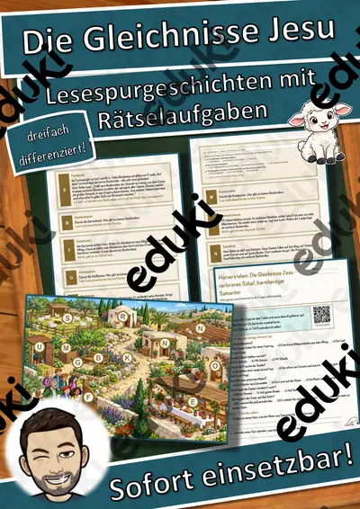
Lesespur: Die Gleichnisse Jesu: verlorenes Schaf, barmherziger Samariter – Lesespurgeschichte mit Rätseln (Klasse 3)

Lesespur: Herbstgedichte: reimen, vortragen, selbst dichten – Lesespurgeschichte mit Rätseln (Klasse 3)

Lesespur: Lichterfeste in den Religionen: Diwali, Chanukka, Martinstag, Advent – Lesespurgeschichte mit Rätseln (Klasse 6)

Lesespur: Der Kanon: eine Melodie, viele Stimmen – Lesespurgeschichte mit Rätseln (Klasse 3)

Lesespur: Musikinstrumente der Welt: eine Reise durchs Museum – Lesespurgeschichte mit Rätseln (Klasse 3)

Lesespur: Weihnachtslieder: Musik im Advent – Lesespurgeschichte mit Rätseln (Klasse 3)

Lesespur: Volkstanz und Tanzfest: Tänze im Takt – Lesespurgeschichte mit Rätseln (Klasse 3)
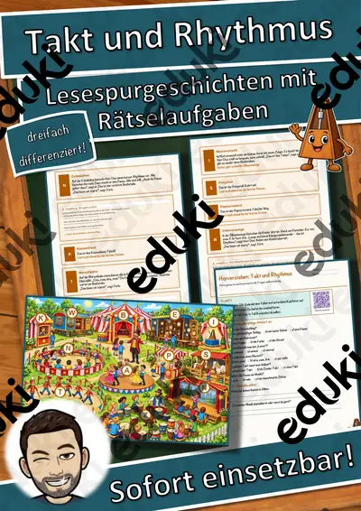
Lesespur: Takt und Rhythmus – Lesespurgeschichte mit Rätseln (Klasse 3)

Lesespur: Medien-Detektive unterwegs – Lesespurgeschichte mit Rätseln (Klasse 3)

Wasserfarbe Lückentext mit Wortspeicher Hörverstehen und Suchsel
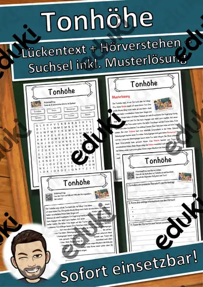
Tonhöhe Lückentext mit Wortspeicher Hörverstehen und Suchsel
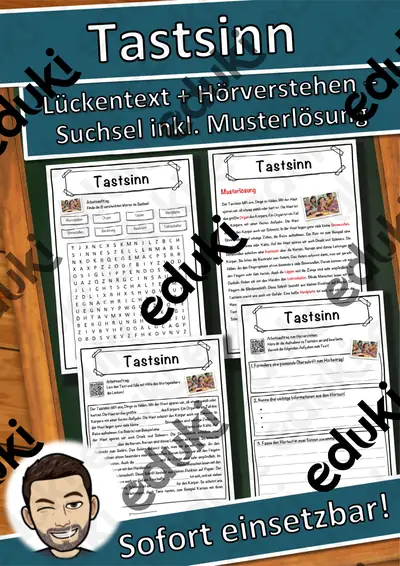
Tastsinn Lückentext mit Wortspeicher Hörverstehen und Suchsel

Stimmlage Lückentext mit Wortspeicher Hörverstehen und Suchsel

Schulgottesdienst Lückentext mit Wortspeicher Hörverstehen und Suchsel
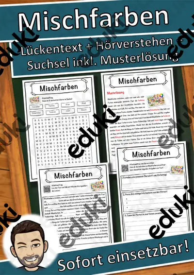
Mischfarben Lückentext mit Wortspeicher Hörverstehen und Suchsel

Körperhaltung Lückentext mit Wortspeicher Hörverstehen und Suchsel
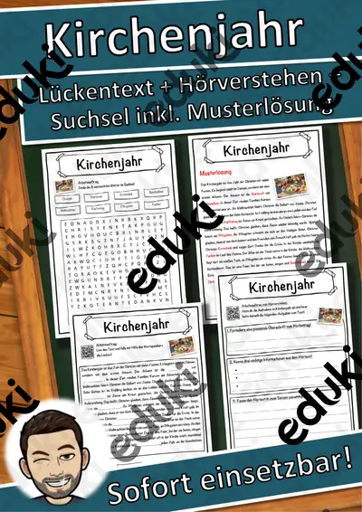
Kirchenjahr Lückentext mit Wortspeicher Hörverstehen und Suchsel
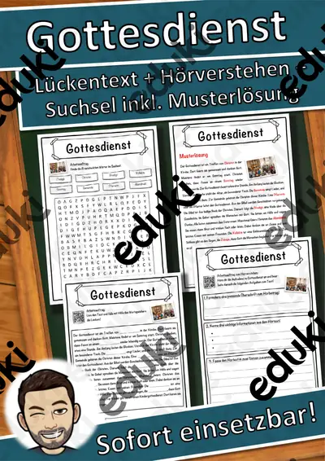
Gottesdienst Lückentext mit Wortspeicher Hörverstehen und Suchsel

Gesunde Ernährung Lückentext mit Wortspeicher Hörverstehen und Suchsel

Gesten Lückentext mit Wortspeicher Hörverstehen und Suchsel
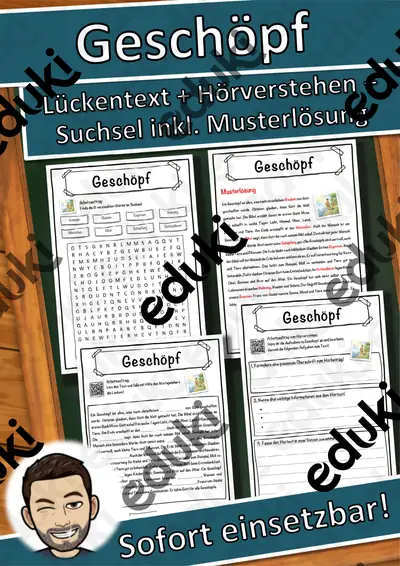
Geschöpf Lückentext mit Wortspeicher Hörverstehen und Suchsel

Felsformation Lückentext mit Wortspeicher Hörverstehen und Suchsel

Feder und Tusche Lückentext mit Wortspeicher Hörverstehen und Suchsel

Farbwirkung Lückentext mit Wortspeicher Hörverstehen und Suchsel

Die Farbe Rot Lückentext mit Wortspeicher Hörverstehen und Suchsel

Die Farbe Blau Lückentext mit Wortspeicher Hörverstehen und Suchsel
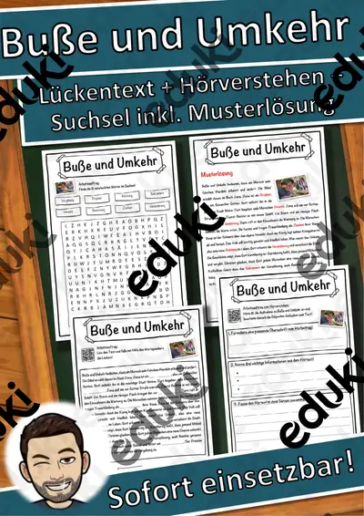
Buße und Umkehr Lückentext mit Wortspeicher Hörverstehen und Suchsel

Blickkontakt Lückentext mit Wortspeicher Hörverstehen und Suchsel

Auge-Hand-Koordination Lückentext mit Wortspeicher Hörverstehen und Suchsel

Auferweckung Jesu Lückentext mit Wortspeicher Hörverstehen und Suchsel

Abendrot Lückentext mit Wortspeicher Hörverstehen und Suchsel
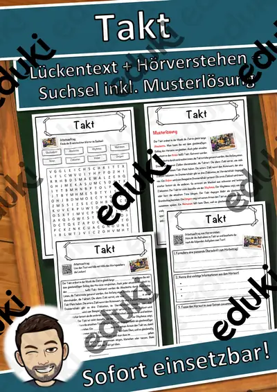
Takt Lückentext mit Wortspeicher Hörverstehen und Suchsel
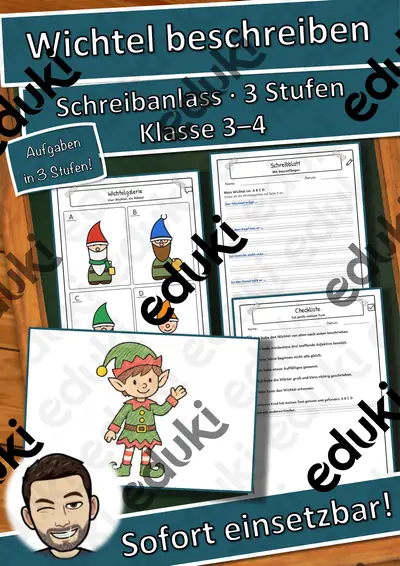
Wichtel beschreiben: Schreibanlass mit 4 Wichtelbildern, Wortspeicher und Checkliste (Klasse 3–4)

DaZ-Wortschatz Materialpaket: 6 Wortfelder differenziert A1/A2/B1 – Hörszenen (QR), Lückentexte, Rollenspiele, Sprechkarten

DaZ-Wortschatz Körper und Gesundheit – differenziert A1/A2/B1: Hörszene (QR), Lückentexte, Rollenspiel

DaZ-Wortschatz Unterwegs in der Stadt – differenziert A1/A2/B1: Hörszene (QR), Lückentexte, Rollenspiel

DaZ-Wortschatz Mein Zuhause – differenziert A1/A2/B1: Hörszene (QR), Lückentexte, Rollenspiel
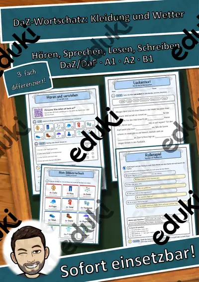
DaZ-Wortschatz Kleidung und Wetter – differenziert A1/A2/B1: Hörszene (QR), Lückentexte, Rollenspiel

DaZ-Wortschatz Essen und Trinken – differenziert A1/A2/B1: Hörszene (QR), Lückentexte, Rollenspiel

DaZ-Wortschatz In der Schule – differenziert A1/A2/B1: Hörszene (QR), Lückentexte, Rollenspiel

Materialpaket Wort-Bild-Karten Grundschule Klasse 1–4 – Essen und Einkaufen: 3 Themen, mit Lösungsseite

Materialpaket Wort-Bild-Karten Grundschule Klasse 1–4 – Jahreszeiten und Feste: 4 Themen, mit Lösungsseite
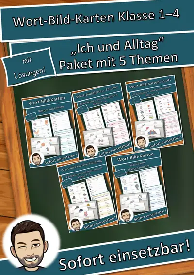
Materialpaket Wort-Bild-Karten Grundschule Klasse 1–4 – Ich und Alltag: 5 Themen, mit Lösungsseite

Materialpaket Wort-Bild-Karten Grundschule Klasse 1–4 – Fantasie und Abenteuer: 5 Themen, mit Lösungsseite
Materialpaket Wort-Bild-Karten Grundschule Klasse 1–4 – Tiere und Natur: 7 Themen, mit Lösungsseite

Materialpaket Wort-Bild-Karten Grundschule Klasse 1–4 – Orte und Umwelt: 3 Themen, mit Lösungsseite
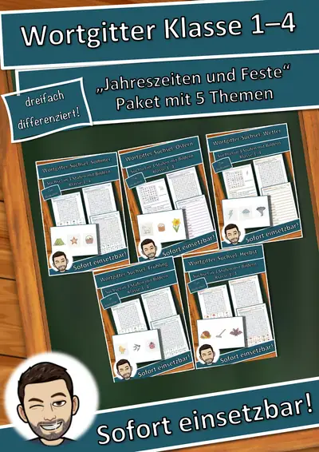
Materialpaket Wortgitter Grundschule Klasse 1–4 – Jahreszeiten und Feste: 5 Themen, dreifach differenziert, mit Lösungen

Materialpaket Wortgitter Grundschule Klasse 1–4 – Fantasie und Abenteuer: 4 Themen, dreifach differenziert, mit Lösungen
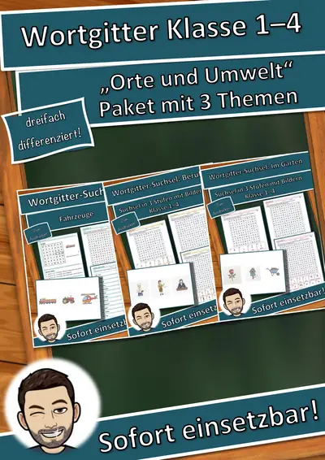
Materialpaket Wortgitter Grundschule Klasse 1–4 – Orte und Umwelt: 3 Themen, dreifach differenziert, mit Lösungen

Materialpaket Wortgitter Grundschule Klasse 1–4 – Tiere und Natur: 7 Themen, dreifach differenziert, mit Lösungen

Materialpaket Wortgitter Grundschule Klasse 1–4 – Essen und Einkaufen: 3 Themen, dreifach differenziert, mit Lösungen

Materialpaket Wortgitter Grundschule Klasse 1–4 – Ich und Alltag: 6 Themen, dreifach differenziert, mit Lösungen

Materialpaket Sprechanlässe Grundschule Klasse 1–4 – Orte und Umwelt: 3 Themen, dreifach differenziert, mit Musterantworten

Materialpaket Sprechanlässe Grundschule Klasse 1–4 – Essen und Einkaufen: 3 Themen, dreifach differenziert, mit Musterantworten

Materialpaket Sprechanlässe Grundschule Klasse 1–4 – Tiere und Natur: 7 Themen, dreifach differenziert, mit Musterantworten
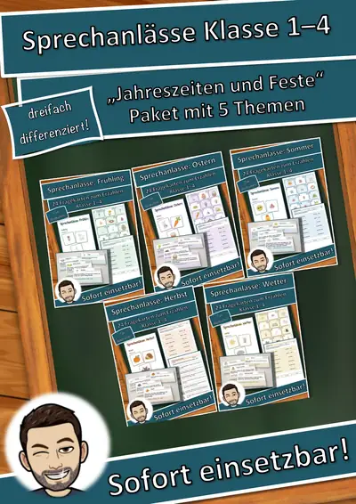
Materialpaket Sprechanlässe Grundschule Klasse 1–4 – Jahreszeiten und Feste: 5 Themen, dreifach differenziert, mit Musterantworten

Materialpaket Sprechanlässe Grundschule Klasse 1–4 – Fantasie und Abenteuer: 5 Themen, dreifach differenziert, mit Musterantworten

Materialpaket Sprechanlässe Grundschule Klasse 1–4 – Ich und Alltag: 6 Themen, dreifach differenziert, mit Musterantworten

Materialpaket Klammerkarten Grundschule Klasse 1–4 – Essen und Einkaufen: 5 Themen, dreifach differenziert, mit Lösungen

Materialpaket Klammerkarten Grundschule Klasse 1–4 – Orte und Umwelt: 4 Themen, dreifach differenziert, mit Lösungen
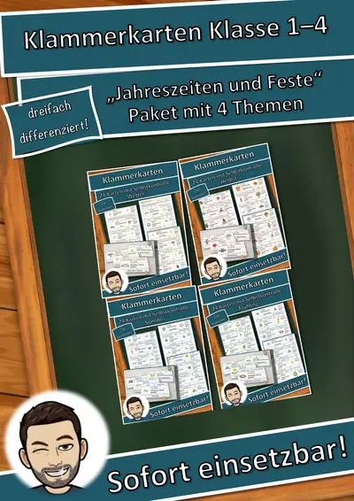
Materialpaket Klammerkarten Grundschule Klasse 1–4 – Jahreszeiten und Feste: 4 Themen, dreifach differenziert, mit Lösungen
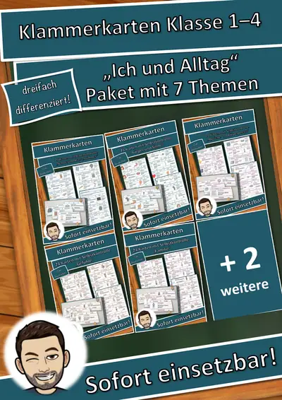
Materialpaket Klammerkarten Grundschule Klasse 1–4 – Ich und Alltag: 7 Themen, dreifach differenziert, mit Lösungen

Materialpaket Klammerkarten Grundschule Klasse 1–4 – Fantasie und Abenteuer: 5 Themen, dreifach differenziert, mit Lösungen

Materialpaket Klammerkarten Grundschule Klasse 1–4 – Tiere und Natur: 8 Themen, dreifach differenziert, mit Lösungen

Materialpaket Himmel und Hölle Grundschule Klasse 1–4 – Fantasie und Abenteuer: 5 Themen, dreifach differenziert, mit Lösungen
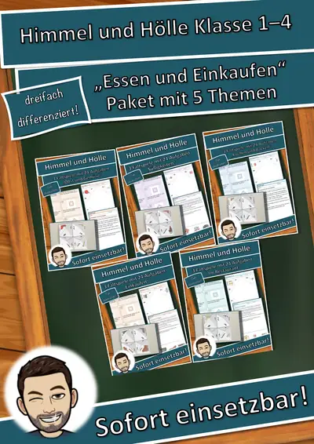
Materialpaket Himmel und Hölle Grundschule Klasse 1–4 – Essen und Einkaufen: 5 Themen, dreifach differenziert, mit Lösungen
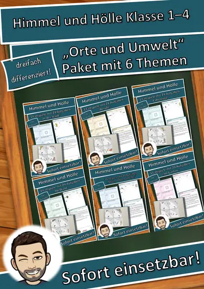
Materialpaket Himmel und Hölle Grundschule Klasse 1–4 – Orte und Umwelt: 6 Themen, dreifach differenziert, mit Lösungen

Materialpaket Himmel und Hölle Grundschule Klasse 1–4 – Tiere und Natur: 8 Themen, dreifach differenziert, mit Lösungen

Materialpaket Himmel und Hölle Grundschule Klasse 1–4 – Jahreszeiten und Feste: 5 Themen, dreifach differenziert, mit Lösungen

Materialpaket Himmel und Hölle Grundschule Klasse 1–4 – Ich und Alltag: 7 Themen, dreifach differenziert, mit Lösungen
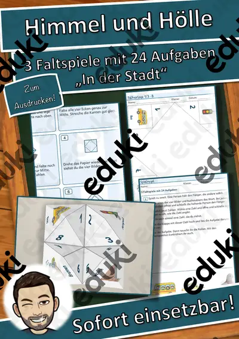
Himmel und Hölle: In der Stadt – Himmel und Hölle – Klasse 1–4
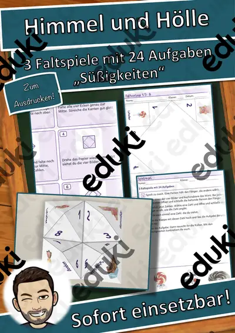
Himmel und Hölle: Süßigkeiten – Himmel und Hölle – Klasse 1–4
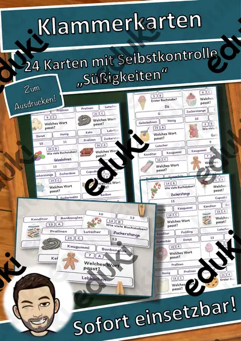
Klammerkarten: Süßigkeiten – Klammerkarten – Klasse 1–4

Himmel und Hölle: Gefühle – Himmel und Hölle – Klasse 1–4
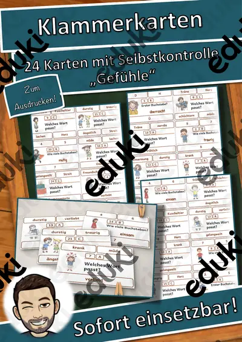
Klammerkarten: Gefühle – Klammerkarten – Klasse 1–4

Himmel und Hölle: Musik und Instrumente – Himmel und Hölle – Klasse 1–4
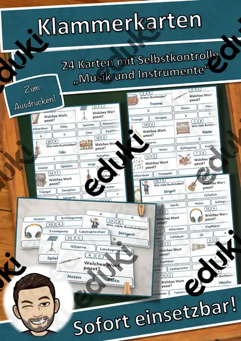
Klammerkarten: Musik und Instrumente – Klammerkarten – Klasse 1–4

Himmel und Hölle: Hygiene und Körperpflege – Himmel und Hölle – Klasse 1–4

Klammerkarten: Hygiene und Körperpflege – Klammerkarten – Klasse 1–4

Himmel und Hölle: Tagesablauf – Himmel und Hölle – Klasse 1–4

Klammerkarten: Tagesablauf – Klammerkarten – Klasse 1–4

Himmel und Hölle: Insekten und Krabbeltiere – Himmel und Hölle – Klasse 1–4

Geschenkbox-Karte mit Tasche: Druckvorlage Weihnachten mit 4 Figuren für Gutscheine (Klasse 1–4)

Klammerkarten: Insekten und Krabbeltiere – Klammerkarten – Klasse 1–4
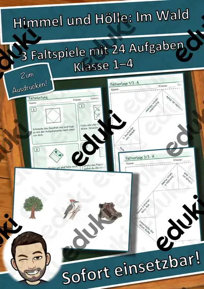
Himmel und Hölle: Im Wald – Himmel und Hölle – Klasse 1–4

Klammerkarten: Im Wald – Klammerkarten – Klasse 1–4

Himmel und Hölle: Einkaufen – Himmel und Hölle – Klasse 1–4
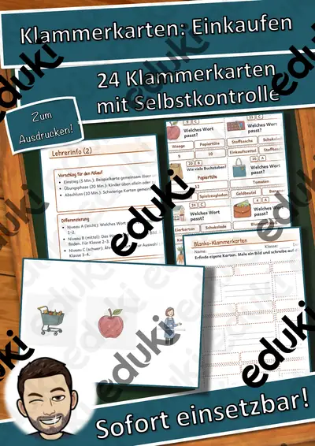
Klammerkarten: Einkaufen – Klammerkarten – Klasse 1–4
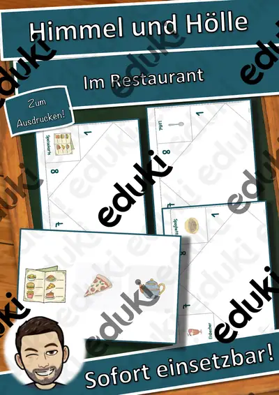
Himmel und Hölle: Im Restaurant – Himmel und Hölle – Klasse 1–4

Klammerkarten: Im Restaurant – Klammerkarten – Klasse 1–4
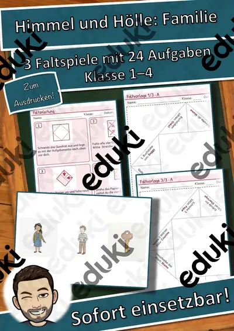
Himmel und Hölle: Familie – Himmel und Hölle – Klasse 1–4

Klammerkarten: Familie – Klammerkarten – Klasse 1–4

Himmel und Hölle: Wilde Tiere – Himmel und Hölle – Klasse 1–4

Klammerkarten: Wilde Tiere – Klammerkarten – Klasse 1–4
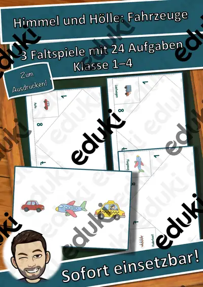
Himmel und Hölle: Fahrzeuge – Himmel und Hölle – Klasse 1–4

Klammerkarten: Fahrzeuge – Klammerkarten – Klasse 1–4

Himmel und Hölle: Kleidung – Himmel und Hölle – Klasse 1–4

Klammerkarten: Kleidung – Klammerkarten – Klasse 1–4

Himmel und Hölle: Im Zoo – Himmel und Hölle – Klasse 1–4
Klammerkarten: Im Zoo – Klammerkarten – Klasse 1–4
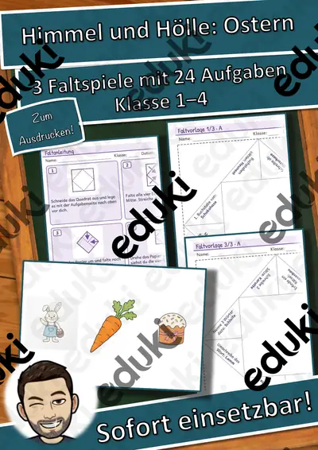
Himmel und Hölle: Ostern – Himmel und Hölle – Klasse 1–4

Klammerkarten: Ostern – Klammerkarten – Klasse 1–4

Himmel und Hölle: Frühling – Himmel und Hölle – Klasse 1–4

Klammerkarten: Frühling – Klammerkarten – Klasse 1–4
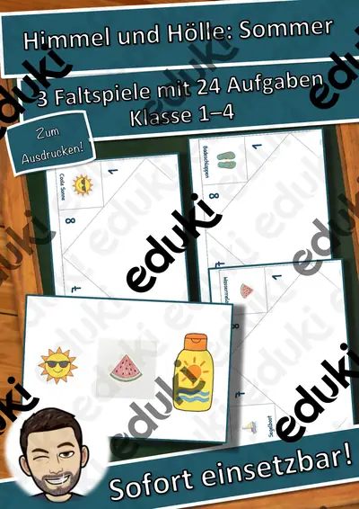
Himmel und Hölle: Sommer – Himmel und Hölle – Klasse 1–4

Himmel und Hölle: Wetter – Himmel und Hölle – Klasse 1–4

Klammerkarten: Wetter – Klammerkarten – Klasse 1–4

Himmel und Hölle: Bienen – Himmel und Hölle – Klasse 1–4

Klammerkarten: Bienen – Klammerkarten – Klasse 1–4
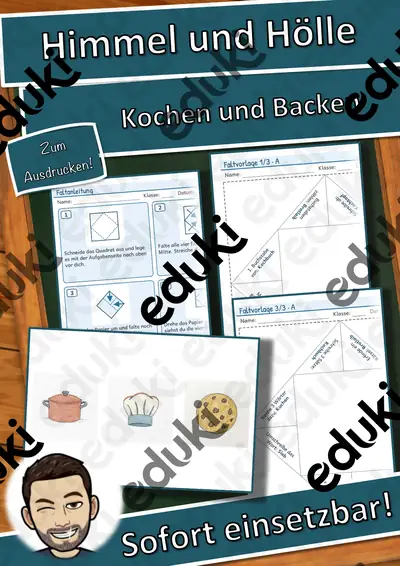
Himmel und Hölle: Kochen und Backen – Himmel und Hölle – Klasse 1–4
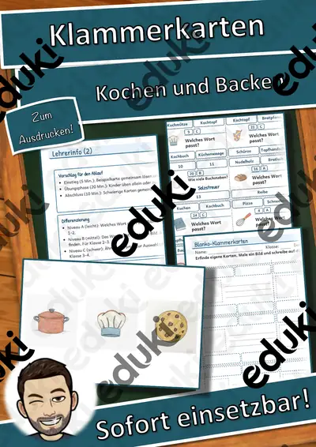
Klammerkarten: Kochen und Backen – Klammerkarten – Klasse 1–4

Klammerkarten: Obst und Gemüse – Klammerkarten – Klasse 1–4
Keine Materialien gefunden – versuch einen anderen Suchbegriff oder Filter.